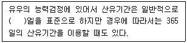
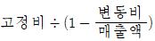
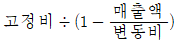
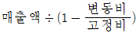
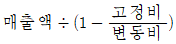
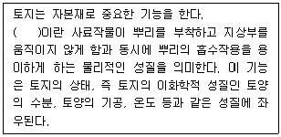
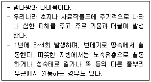
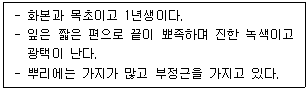

축산산업기사 (2019-09-21 기출문제)
1과목: 가축번식 육종학
1. 소의 배란시간으로 가장 적합한 것은?
- 발정 개시 후 6~9시간
- 발정 종료 후 10~11시간
- 발정 종료 후 25~36시간
- 교배 후 10~11시간
(정답률: 80%)

2. 돼지는 어떤 종류의 태반을 갖고 있는가?
- 궁부성 태반
- 대상성 태반
- 반상성 태반
- 산재성 태반
(정답률: 73%)
3. 다음 ( )안에 알맞은 일수는?

- 2⑤
- 255
- 3⑤
- 355
(정답률: 81%)
4. 주요 산란능력 형질로 옳은 것은?
- 육질률
- 우모 발생률
- 주요시기 체중
- 조숙성
(정답률: 83%)
5. 수정 시 난자에서 다정자 거부반응에 의하여 다정자 침입을 막는 곳은?
- 과립세포층
- 투명대
- 위란강
- 핵막
(정답률: 83%)
6. 강력유전(prepotency)과 관련이 있는 교배방법은?
- 계통교배
- 근친교배
- 누진교배
- 순종교배
(정답률: 77%)
7. 소의 태반에 대한 설명으로 옳지 않은 것은?
- 궁부성 태반으로 자궁소구가 있다.
- 궁부와 자궁소구가 접합한 태반분엽이 있다.
- 비임신각에도 궁부는 발달하나 태반분엽은 형성되지 않는다.
- 자궁 내 자궁소구가 없고, 융모막의 융모가 태반의 표면 전체에 산재하는 상피융모성 태반이다.
(정답률: 71%)
8. 돼지의 근친교배에 대한 설명으로 옳은 것은?
- 근교계수 상승으로 성장률, 산자수 등이 증가한다.
- 근교된 수퇘지의 성욕감퇴, 정수발육 부진으로 번식능력이 저하된다.
- 번식능력 저하 방지를 위해 고도의 근친교배를 해야 한다.
- 근교계통 육성 시 능력이 떨어지는 개체나 계통이라도 도태시키지 않는다.
(정답률: 76%)
9. 소의 발정 징후에 대한 설명으로 옳지 않은 것은?
- 식욕이 줄어든다.
- 자궁경이 이완된다.
- 움직임이 거의 없어진다.
- 특이한 소리로 자주 운다.
(정답률: 78%)
10. 다수의 경제 형질을 개량할 때 개량 대상의 형질을 종합적으로 고려하여 하나의 점수를 산출하는 방법으로 돼지에게 가장 많이 이용하고 있는 것은?
- 순차 선발법
- 독립 도태법
- 간접 선발법
- 선발 지수법
(정답률: 84%)
11. 정자의 구조 중 암가축의 생식기관 내에서 수정능력을 획득할 때 주로 변화되는 부분은?
- 두부
- 중편부
- 주부
- 종부
(정답률: 79%)
12. 돼지의 임신 진단방법 중 임신 30일령 전후의 임신을 비교적 정확하게 진단할 수 있는 것은?
- 방사선 진단법
- 초음파 진단법
- 논리턴(NR)법
- 호르몬 주사법
(정답률: 83%)
13. 능력이 부족한 재래종 소를 개량하는데 흔히 이용되는 교배방법은?
- 잡종교배
- 근친교배
- 누진교배
- 순종교배
(정답률: 78%)
14. 난자를 배출하는 부위는?
- 자궁경
- 난소
- 수란관
- 자궁각
(정답률: 84%)
15. 일정한 성주기가 없는 가축은?
- 면양
- 산양
- 돼지
- 토끼
(정답률: 83%)
16. 육우와 유우의 경제형질이 연결된 것으로 옳지 않은 것은?
- 육우 - 번식능률
- 유우 - 번식능률
- 육우 – 이유 시 체중
- 유우 – 이유 시 체중
(정답률: 69%)
17. 돼지의 분만 징후를 바르게 설명한 것은?
- 식욕이 왕성해져 무리에서 떨어진다.
- 자리깃을 물어다 새끼 보금자리를 만든다.
- 꼬리를 자주 움직이며 사타구니에 땀이난다.
- 산도(parturition canal) 부근의 혈류량이 적어진다.
(정답률: 73%)
18. 닭의 체중과 가장 밀접한 상관관계를 가지는 형질은?
- 정강이의 길이
- 생존율
- 산란율
- 사료효율
(정답률: 78%)
19. 젖소의 경제형질 중 비유량과 부(-)의 상관관계를 가지는 것은?
- 유지율
- 사료효율
- 유지생산량
- 유단백질 생산량
(정답률: 68%)
20. 우리나라에서 계절번식 동물의 번식기간으로 옳은 것은?
- 면양 : 9~11월
- 말 : 9~11월
- 멧돼지 : 4~5월
- 사슴 : 3~5월
(정답률: 68%)
2과목: 가축사양학
21. 종란의 수정률, 부화율 및 난중에 관여하는 지방산만으로 구성된 것은?
- 올레인산(oleic acid), 에루크산(erucic acid), 클루파노돈산(clupanodonic acid)
- 리놀레산(linoleic acid), 아라키돈산(arachidonic), 리놀렌산(linolenic acid)
- 스테아린산(stearic acid), 뷰티르산(butyric acid), 아세트산(acetic acid)
- 프로피온산(propionic acid), 라우르산(lauric acid), 포름산(formic acid)
(정답률: 76%)
22. 산유 중기의 착유우에 총가소화영양분(TDN) 54%인 조사료와 TDN 82%인 농후사료를 배합해서 TDN이 70%인 사료를 배합하고자 할 때 각 사료의 배합비율은?
- 조사료 : 40.9%, 농후사료 : 59.1%
- 조사료 : 41.9%, 농후사료 : 58.1%
- 조사료 : 42.9%, 농후사료 : 57.1%
- 조사료 : 43.9%, 농후사료 : 56.1%
(정답률: 58%)
23. 부화율을 높이는 데 가장 관계 깊은 비타민은?
- 비타민 E
- 비타민 B6
- 비타민 K
- 비타민 C
(정답률: 65%)
24. 임신한 가축의 가장 적절한 사양방법은?
- 임신 전체 기간 동안에 높은 수준의 영양소가 함유된 사료를 준다.
- 임산 중기에 높은 수준의 영양소가 함유된 사료를 준다.
- 임신 초기에 높은 수준의 영양소가 함유된 사료를 준다.
- 임신 후반기에 높은 수준의 영양소가 함유된 사료를 준다.
(정답률: 68%)
25. 난중 또는 난각질과 비교적 관계가 적은 영양소는?
- 사료 중 단백질 함량
- 인 함량
- 칼슘 함량
- 탄수화물 함량
(정답률: 76%)
26. 콕시듐증이 걸렸을 때 계분의 색은?
- 적색분
- 갈색분
- 녹색분
- 백색분
(정답률: 67%)
27. 육계의 에너지 요구량은 일반적으로 대사에너지(metabolic energy, ME)를 사용하는데 그 이유가 아닌 것은?
- 사료 중 영양균형에 의한 영향이 적다.
- 측정방법이 비교적 쉽고 오차가 작다.
- 닭의 품종 등 유전적 요인에 따라 크게 달라지지 않는다.
- 성장, 산란 등 닭의 능력과 상관관계가 낮다.
(정답률: 53%)
28. 가금류에 많이 사용되는 성장촉진제로 병아리의 성장과 브로일러의 육질개선, 사료효율 향상, 피부의 착색 및 깃털의 발달에 효과가 있으며, 항생제와 병행사용 시 상응작용도 일어나는 것은?
- 생균제
- 효소제
- 황산동
- 유기비소제
(정답률: 58%)
29. 임신한 가축의 태아발달에 관한 설명으로 옳은 것은?
- 임신 전체 기간 동안에 비슷한 발육 양태를 유지한다.
- 임신 초기에 빠르게 발달하고 중기 이후에는 둔화된다.
- 임신 중기까지 완만하며 임신 후반기에 빠르게 진행된다.
- 임신 초기에 느리게 발달하고 중기 이후에는 빠르게 진행된다.
(정답률: 67%)
30. 돈육 생산을 위한 영양소 요구량에 대한 설명으로 옳지 않은 것은?
- 단백질의 이용성을 증대시키기 위해서 에너지의 공급이 충분해야 한다.
- 사료 내 에너지 함량이 많을수록 등지방의 두께는 두꺼워진다.
- 사료 내 단백질 함량에 비하여 에너지 함량이 많으면 단백질 섭취량이 높아진다.
- 사료에 비타민을 첨가함으로써 일당 증체량을 높일 수 있다.
(정답률: 64%)
31. 일반적인 사양 시 젖소의 반추위 내 가장 많이 발생하는 휘발성지방산(VFA)은?
- 아세트산(acetic acid)
- 뷰티르산(butyric acid)
- 프로피온산(propionic acid)
- 아이소뷰티르산(isobutyric acid)
(정답률: 63%)
32. 어떤 비육돈은 건물기준으로 배합사료 4kg을 요구한다. 이 때 급여하는 배합사료의 수분함량이 20%일 경우 실제 급여상태 기준 급여량은?
- 4kg
- 5kg
- 6kg
- 7kg
(정답률: 70%)
33. 초유의 성분 중 일반 우유 성분보다 적게 들어 있는 것은?
- 유당
- 면역글로불린
- 칼슘
- 비타민 A
(정답률: 78%)
34. 경지방을 생산하는 사료를 옳게 짝지어진 것은?
- 옥수수, 보리
- 고구마, 대두박
- 면실박, 야자박
- 전분박, 채종박
(정답률: 65%)
35. 위액의 주된 작용은?
- 녹말 분해
- 지방 분해
- 미생물 생성
- 단백질 분해
(정답률: 72%)
36. 비육 중인 돼지의 체지방을 적게 하면서 증체속도를 빠르게 하기 위한 알맞은 사양관리 요령은?
- 생체중 50kg을 전후로 전기에는 저영양, 중기에는 고영양으로 사양관리한다.
- 생체중 50kg을 전후로 전기에는 고영양, 중기에는 저영양으로 사양관리한다.
- 이유 후부터 출하까지 저영양으로 사양관리한다.
- 이유 후부터 출하까지 고영양으로 사양관리한다.
(정답률: 70%)
37. 양돈장 경영에 있어서 돼지 사육 시 중요한 점이 아닌 것은?
- 품질이 좋은 고기를 생산할 것
- 복당 산자수를 증가시킬 것
- 성장을 촉진시켜 육성기간을 짧게 할 것
- 사료 요구율을 높이고 사료효율을 낮게 할 것
(정답률: 80%)
38. 한우 수송아지의 거세방법 중 거세가 확실하고 송아지에게 스트레스를 가장 적게 주기 때문에 최근에 가장 널리 사용하는 방법은?
- 무혈거세기법
- 외과적 수술법
- 고무링법
- 정관압착법
(정답률: 69%)
39. 반추가축의 소화기관 중 섭취한 영양소의 주된 소화·흡수가 일어나는 곳은?
- 소장
- 반추위
- 대장
- 식도
(정답률: 67%)
40. 탄수화물의 기능을 설명한 것으로 옳지 않은 것은?
- 지방산, 단백질의 합성에도 쓰인다.
- 가장 경제적인 에너지 발생 영양소이다.
- 체내에서는 지방으로만 축적된다.
- 뇌와 신경조직의 구성성분이다.
(정답률: 78%)
3과목: 축산경영학
41. 손익분기점 생산량 산출 공식으로 옳은 것은?




(정답률: 59%)
42. 복합경영에 대한 설명으로 옳지 않은 것은?
- 노동력을 효율적으로 이용할 수 있다.
- 기계 및 시설을 효율적으로 이용할 수 있다.
- 생산물의 동일성에 의하여 시장정보 획득이 유리하다.
- 수입원이 다양하고 평균화되어 자금회전이 원활하다.
(정답률: 69%)
43. 다음 중 유동자본재가 아닌 것은?
- 농후사료
- 사료종자
- 의약품비
- 트랙터
(정답률: 79%)
44. 어느 비육우 사육농가의 두당 총수입이 2,000,000원, 경영비가 1,000,000원, 감가상각비가 300,000원, 자가노력비가 500,000원일 때, 두당 소득은 얼마인가?
- 1,000,000원
- 700,000원
- 500,000원
- 200,000원
(정답률: 56%)
45. 고정자본재로 볼 수 없는 것은?
- 착유우
- 비육우
- 축사
- 번식돈
(정답률: 72%)
46. 고정자본재에 대한 설명으로 옳은 것은?
- 사료, 비료 등이 포함된다.
- 1회 사용으로 가치가 상실된다.
- 감가상각법에 의하여 비용 산출을 한다.
- 성분이 축산물 중으로 이행되어 가치가 높아진다.
(정답률: 77%)
47. 기초가격이 1,000,000원이고, 잔존율 10%에 내용연수가 5년인 착유기를 정액법을 이용하여 계산한 연간 감가상각비는?
- 100,000원
- 184,500원
- 180,000원
- 210,000원
(정답률: 69%)
48. 비용에 관한 공식으로 옳지 않은 것은?
- 평균비용 = 총비용 ÷ 총생산량
- 총비용 = 총고정비용 + 총유동비용
- 한계비용 = 총비용증가분 ÷ 산출량증가분
- 평균가변비용 = 산출량 ÷ 총가변비용
(정답률: 51%)
49. 노동생산성을 산출하는 공식으로 알맞은 것은?
- 총생산량 ÷ 토지면적
- 총생산량 ÷ 투하자본
- 총생산량 ÷ 투하노동량
- 총생산량 ÷ 생산두수
(정답률: 73%)
50. 생산비에 대한 설명으로 옳지 않은 것은?
- 화폐가치로 표시할 수 있어야 한다.
- 천재지변에 의한 손실도 생산비에 포함된다.
- 생산물을 위해 직접 소비되는 것이어야 한다.
- 정상적인 생산활동을 위하여 소비된 것이어야 한다.
(정답률: 74%)
51. 경영조직 단일화의 장점은?
- 기술의 고도화
- 노동력의 배분화
- 자금회전의 원활화
- 토지의 합리적 이용
(정답률: 68%)
52. 축산물 경영비 비목에 해당되지 않는 것은?
- 사료비
- 수도광열비
- 자가노력비
- 수선비
(정답률: 69%)
53. 낙농경영에서 젖소의 감가상각비 계산에 포함되지 않는 것은?
- 착육우평가액
- 폐우가격
- 우유판매가격
- 내용연수
(정답률: 64%)
54. 우유 생산을 목적으로 하는 낙농가에서 송아지를 생산한 경우 송아지에 대한 적합한 자본재 평가방법은?
- 시가평가법
- 수익가평가법
- 기회비용평가법
- 취득원가평가법
(정답률: 59%)
55. 기업적 축산경영의 최대 목표는?
- 소득의 극대화
- 가족노동 보수의 증대
- 이윤의 극대화
- 총(조)수입의 극대화
(정답률: 77%)
56. 축산경영의 조직 결정 시 고려하여야 할 시장과의 조건이 아닌 것은?
- 토지조건
- 시장의 규모
- 축산물의 가격조건
- 목장과 시장과의 경제적 거리
(정답률: 62%)
57. 유사비를 표현한 것으로 옳은 것은?
- 유량 / 사료비
- 구입 사료비 / 유대
- 조사료비 / 유대
- 농후 사료비 / 유량
(정답률: 56%)
58. 다음 설명에서 ( )안에 알맞은 내용은?

- 토지의 가경력
- 토지의 적재력
- 토지의 배양력
- 토지의 불가증성
(정답률: 59%)
59. 일정기간 동안에 축산경영을 통해 발생한 비용과 이익의 상태를 기록한 회계정보를 무엇이라고 하는가?
- 일기장
- 대차대조표
- 영농기록장
- 손익계산서
(정답률: 79%)
60. 가변(유동)비용에 속하지 않는 것은?
- 사료비
- 동력비
- 감가상각비
- 고용노임
(정답률: 71%)
4과목: 사료작물학
61. 공간 이용성과 토양 양분의 이용성을 제고하고, 가축에게는 영양균형과 기호성을 높이는 장점을 가진 작부방식은?
- 단작
- 간작
- 혼작
- 윤작
(정답률: 62%)
62. 알팔파로 사일리지를 만들 때 재료로의 특성과 조제방법에 대한 설명으로 옳은 것은?
- 옥수수에 비해 양질 사일리지 조제에 유리한 완충력이 높다.
- 가용성 탄수화물 함량이 높아 사일리지 발효가 잘 된다.
- 고수분 사일리지로 제조하는 경우 첨가제 없이도 양질의 사일리지 조제가 가능하다.
- 예건 또는 저수분 사일리지로 조제하는 것이 좋다.
(정답률: 61%)
63. 탐형 사일로에 저장할 사일리지용 옥수수의 수확 적기에 대한 설명으로 가장 알맞은 것은?
- 건물함량이 10% 정도 되는 시기이다.
- 건물함량이 20% 정도 되는 시기이다.
- 건물함량이 30% 정도 되는 시기이다.
- 건물함량이 40% 정도 되는 시기이다.
(정답률: 57%)
64. 북방형 목초와 남방형 목초의 광합성을 위한 최적 온도는?
- 북방형 : 10~15℃, 남방형 : 35℃
- 북방형 : 15~20℃, 남방형 : 30℃
- 북방형 : 35℃, 남방형 : 10~15℃
- 북방형 : 30℃, 남방형 : 15~20℃
(정답률: 72%)
65. 다음 설명에 해당하는 해충은?

- 조명나방 유충
- 멸강나방 유충
- 검거세미나방 유충
- 콩풍뎅이 유충
(정답률: 75%)
66. 사일리지 조제에 쓰이는 재료에 관한 설명으로 옳지 않은 것은?
- 화본과보다는 콩과 사료작물로 사일리지를 조제하면 발효가 잘 된다.
- 완충력도 중요하지만 재료의 수분함량이 더욱 중요하다.
- 수분함량이 70% 이상되면 누즙에 의한 손실이 커진다.
- 재료의 특성에 따라 첨가제를 쓰는 것이 유리할 때도 있다.
(정답률: 65%)
67. 화본과 사료작물 및 목초류의 예취적기는?
- 생육 중기에서 수잉기 직전까지
- 수잉기 전에서 수잉기 사이
- 수잉기에서 출수 초기 사이
- 유숙기에서 완숙기 사이
(정답률: 71%)
68. 호밀에 대한 설명으로 옳지 않은 것은?
- 호밀속의 월년생 작물이다.
- 줄기 표면이 납(wax)으로 덮여 있다.
- 염색체는 2n=14이다.
- 내한성은 강하나 토양 적응성이 낮다.
(정답률: 65%)
69. 사료작물 중에서 완충능력이 강한 순에서 약한 순으로 나열된 것은?
- 페레니얼 라이그라스 ＞ 옥수수 ＞ 알팔파
- 옥수수 ＞ 알팔파 ＞ 오차드 그라스
- 오차드 그라스 ＞ 알팔파 ＞ 옥수수
- 알팔파 ＞ 오차드 그라스 ＞ 옥수수
(정답률: 59%)
70. 톨페스큐에 대한 설명으로 거리가 먼 것은?
- 수량이 높고 기호성이 뛰어나서 수확시기가 늦어도 품질이 우수하다.
- 기후에 대한 적응력이 높고 척박한 토양에서도 잘 자란다.
- 여름철 고온에서도 잘 견디는 편이고 토양보존이나 사방용으로도 많이 쓰인다.
- 종자로 전염되는 엔토파이트에 감염되면 환경적응력은 강화되나 가축에게는 독성을 일으킨다.
(정답률: 56%)
71. 일반적으로 사일리지의 건물 손실률이 가장 높을 것으로 예상되는 사일로는?
- 기밀 사일로
- 벙커 사일로
- 스태크 사일로
- 콘크리트 원통형 사일로
(정답률: 61%)
72. 단경기 사료작물로 많이 이용하는 귀리에 대한 설명으로 가장 적절한 것은?
- 중북부 지방에서 월동이 불가능한 경우가 많다.
- 줄기가 거칠고 잎이 많아 가축 기호성이 떨어진다.
- 파종량은 줄뿌림 시 20~30kg/ha 이다.
- 사일리지를 조제할 때는 수분 함량이 낮아 따로 건조가 필요 없다.
(정답률: 46%)
73. 작부체계에서 옥수수 수확 후 후작으로 많이 이용되고 있는 사료작물로만 묶인 것은?
- 근채류, 피, 호밀
- 수단 그라스, 유채, 연맥(귀리)
- 호밀, 연맥(귀리), 유채
- 호밀, 피, 이탈리인 라이그라스
(정답률: 71%)
74. 화본과 목초와 콩과 목초에 있어서 1번초의 수확적기가 올바르게 나열된 것은?
- 화본과 목초 : 영양생장기, 콩과 목초 : 개화 말기
- 화본과 목초 : 영양생장기, 콩과 목초 : 개화 초기
- 화본과 목초 : 출수기, 콩과 목초 : 개화 말기
- 화본과 목초 : 출수기, 콩과 목초 : 개화 초기
(정답률: 67%)
75. 지하경(rizome)이 있고, 잘 관리된 상태에서는 방석 모양의 초지를 형성하는 초종은?
- 이탈리안 라이그라스
- 리드 카나리그라스
- 화이트 클로버
- 알팔파
(정답률: 57%)
76. 주로 가을에 파종하여 당년 12월 이전에 이용하는 사료 작물은? (단, 중부지방의 경우이다.)
- 연맥(귀리)
- 호밀
- 수수
- 수단 그라스계 잡종
(정답률: 53%)
77. 알팔파에 대한 설명으로 옳지 않은 것은?
- 한발에 대한 적응성이 강하다.
- 습윤한 기후에서 생육이 불량하다.
- 늦가을까지 예취 및 방목하여도 월동률이 우수하다.
- 다른 목초에 비해 단백질 공급능력이 우수한 사료작물이다.
(정답률: 50%)
78. 단작의 유리한 점으로 가장 거리가 먼 것은?
- 풍흉의 조절이 쉽다.
- 재배관리가 편리하다.
- 종자를 채종하기 편리하다.
- 고도의 집약재배를 할 수 있다.
(정답률: 59%)
79. 다음 설명에 해당하는 것은?

- 버즈풋 트레포일
- 페레니얼 라이그라스
- 레드 클로버
- 화이트 클로버
(정답률: 58%)
80. 토양교정에 이용되는 석회에 대한 설명으로 옳지 않은 것은?
- 석회 입자가 작을수록 교정속도가 빠르다.
- 전층 시용이 표층 시용보다 교정속도가 빠르다.
- 입자가 굵을수록 효과의 지속성은 오래간다.
- 석회는 시비량을 한꺼번에 전량 살포하는 것이 가장 좋다.
(정답률: 75%)